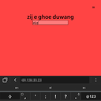
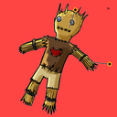

Crowd Fiend is a crowd-sourced demon-summoning game that you play on your phone. A large number of players connect to the game using their smartphones, and are distributed among two teams. After the game begins, every 20 seconds, they'll be given a ritual to fulfill. Whenever a player completes a ritual, their team's demon gains some points, allowing it to level up. After three minutes have elapsed, these demons use turn-based-RPG-style rules to attack each other.
Crowd Fiend was created at Raritan Valley Community College for Global Game Jam 2016, when the theme was "Ritual." When forming teams on site, it attracted a large number of people, and as a result had a total of nine contributors. The game concept came from Cory Williams, who pitched a game about summoning demons cooperatively with phones. I had pitched a different game where players would perform a large number of easy, but repetitive tasks, until they were overwhelmed. After hanging up posters to attract teams, we discovered that the two could be merged quite well, and thus Crowd Fiend was born.
Despite network issues at the GGJ site, we managed to get a game with 36 players in it at the time of the demo. A link to the event can be found below. I can't speak for the whole team, but personally I was extremely nervous: the most players we had ever tested with prior to the event was 8, and while testing was done on a LAN, when we presented the game it was done over the internet connecting to a Raspberry Pi 2 with a $5.00 wireless card. Despite our best efforts, everything went quite smoothly, and a good time was had by most.
Images
 